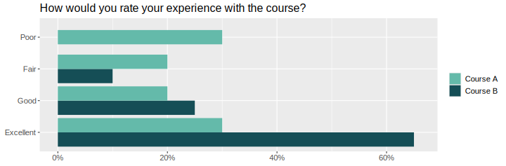
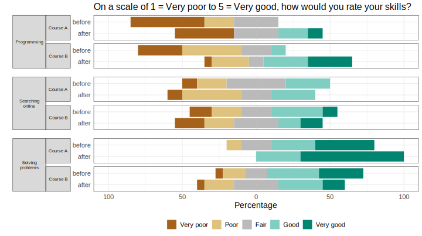

vignettes/articles/simulating_survey_data.Rmd
simulating_survey_data.Rmd
# load responsesR
library(responsesR)
# optionally, to recreate the plots:
library(RColorBrewer)
library(ggh4x)
#> Loading required package: ggplot2
#>
#> Attaching package: 'ggh4x'
#> The following object is masked from 'package:ggplot2':
#>
#> guide_axis_logticksThis article covers the topic of simulating hypothetical survey data. The hypothetical survey simulation is roughly based on the actual comparative study on teaching and learning R in a pair of introductory statistics labs (McNamara 2024).
Imagine a situation in which 10 participants from Course A and 20 participants from Course B have completed the survey. Suppose that the initial question was:
“How would you rate your experience with the course?”
with four possible answers:
Poor, Fair, Good, and Excellent.
Let’s assume that the participants in Course A were neutral regarding the question and participants in Course B had a more positive experience on average.
By choosing appropriate parameters for the latent distributions and
setting number of categories K = 4, we can generate
hypothetical responses (standard deviation sd = 1 and
skewness gamma1 = 0, by default):
set.seed(12345) # to ensure reproducible results
course_A <- get_responses(n = 10, mu = 0, K = 4)
course_B <- get_responses(n = 20, mu = 1, K = 4)To summarize the results, create a data frame from all responses.
K <- 4
ngroups <- 2
cats <- c("Poor", "Fair", "Good", "Excellent")
data <- data.frame(
Course = rep(c("A", "B"), each=K),
Response = factor(rep(cats, ngroups), levels=cats),
Prop = c(get_prop_table(course_A, K), get_prop_table(course_B, K)))
data <- data[data$Prop > 0, ]
knitr::kable(data, format="html", row.names = FALSE)| Course | Response | Prop |
|---|---|---|
| A | Poor | 0.30 |
| A | Fair | 0.20 |
| A | Good | 0.20 |
| A | Excellent | 0.30 |
| B | Fair | 0.10 |
| B | Good | 0.25 |
| B | Excellent | 0.65 |
The results can then be visualized using a grouped bar chart.
xbreaks <- seq(from = 0, to = .8, length.out = 5)
xlimits <- c(0, max(data$Prop) + 0.01)
xlabs <- sapply(xbreaks, percentify)
data$Course <- factor(data$Course, levels = c("B", "A"))
p <- ggplot(data=data, aes(x=Prop, y=Response, fill=Course)) +
geom_col(position=position_dodge2(preserve = "single", padding = 0)) +
scale_x_continuous(breaks = xbreaks, labels = xlabs, limits = xlimits) +
scale_y_discrete(limits = rev(levels(data$Response))) +
scale_fill_manual("legend",
values = c("#64BAAA", "#154E56"),
labels = c("Course A", "Course B"),
limits = c("A", "B")) +
ggtitle("How would you rate your experience with the course?") +
theme(text = element_text(size=14),
axis.title.y = element_blank(),
axis.title.x = element_blank(),
legend.position = "right",
legend.title = element_blank(),
plot.title = element_text(size=16))
ggsave(file="./man/figures/articles/courses_grouped_bar_chart.svg", plot=p, width=10, height=3.3)
Now suppose that the survey also asked the participants to rate their skills on a 5-point Likert scale, ranging from 1 (very poor) to 5 (very good) in:
The survey was completed by the participants both before and after taking the course for a pre and post-comparison. Suppose that participants’ assessments of:
Let’s simulate the survey data for this scenario (number of
categories is K = 5 by default):
# Pre- and post assessments of skills: 1, 2, 3 for course A
pre_A <- get_responses(n = 10, mu = c(-1, 0, 1))
post_A <- get_responses(n = 10, mu = c(0, 0, 2))
# Pre- and post assessments of skills: 1, 2, 3 for course B
pre_B <- get_responses(n = 20, mu = c(-1, 0, 1))
post_B <- get_responses(n = 20, mu = c(0, 0, 0)) # <-- decrease for skill 3Create a data frame from all responses to summarize the results:
data <- list(pre_A, post_A, pre_B, post_B)
items <- 6 # for 3 questions before and after
K <- 5 # for a 5-point Likert scale
skills <- c("Programming", "Searching online", "Solving problems")
questions <- rep(as.vector(sapply(skills, function(skill) rep(skill, K))), 4)
questions <- factor(questions, levels = skills)
data <- data.frame (
Course = c(rep("Course A", items * K), rep("Course B", items * K)),
Question = questions,
Time = as.factor(rep(c(rep("before", 3*K), rep("after", 3*K)), 2)),
resp = rep(rep(1:K, 3), length(data)),
prop = as.vector(sapply(data, function(d) as.vector(t(get_prop_table(d, K))))))
head(data)
#> Course Question Time resp prop
#> 1 Course A Programming before 1 0.5
#> 2 Course A Programming before 2 0.2
#> 3 Course A Programming before 3 0.3
#> 4 Course A Programming before 4 0.0
#> 5 Course A Programming before 5 0.0
#> 6 Course A Searching online before 1 0.1And visualize the results with a stacked bar chart:
data_pos <- data[data$resp >= 4, ]
data_neg <- data[data$resp <= 2, ]
data_neu <- data[data$resp == 3, ]
data_neu$prop <- data_neu$prop / 2
data_pos <- rbind(data_pos, data_neu)
data_pos$resp <- factor(data_pos$resp, levels = rev(1:5))
data_neg <- rbind(data_neg, data_neu)
data_neg$prop <- (-data_neg$prop)
data_neg$resp <- factor(data_neg$resp, levels = 1:5)
color_palette <- brewer.pal(n=5, name = "BrBG")
color_palette[3] <- "#bababaff"
p <- ggplot(data = data_pos, aes(x = Time, y = prop, fill = resp)) +
geom_col() +
geom_col(data = data_neg) +
coord_flip() +
facet_nested(
rows = vars(Question, Course), switch = "y",
strip = strip_nested(size = "variable"),
labeller = labeller(Question = label_wrap_gen(width = 10))
) +
ggtitle("On a scale of 1 = Very poor to 5 = Very good, how would you rate your skills?") +
theme_bw() +
theme(strip.placement = "outside") +
theme(
axis.ticks.x = element_blank(),
axis.ticks.y = element_blank(),
legend.position = "bottom",
legend.title = element_blank(),
text = element_text(size = 14),
strip.text.y.left = element_text(angle = 0, size = 8),
panel.spacing.y = unit(c(2, 5, 2, 5, 2), "mm"),
plot.title = element_text(size=16)
) +
xlab("") +
ylab("Percentage") +
scale_y_continuous(limits = c(-1, 1),
breaks = seq(from = -1, to = 1, by = 0.5),
labels = c(100, 50, 0, 50, 100)) +
scale_fill_manual("", breaks = 1:5, values = color_palette,
labels = c("Very poor", "Poor", "Fair", "Good", "Very good"))
ggsave(file="./man/figures/articles/courses_stacked_bar_chart.svg", plot=p, width=10, height=5.6)